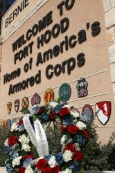

2009 Schedule/Results

Week: 1 2 3 4 5 6 7 8 9 10 11 12 13 14 15 16 17
| Weekly/Yearly Honors | |
|---|---|
| * | |
| * | Most points in a game (year) |
| * | Fewest points in a game (year) |
| * | Most lopsided victory (year) |
| Week 1 NFL Schedule |
||||||
|---|---|---|---|---|---|---|
| Ball Busters | 39 | Itchy Tortugas | 40 | |||
| Beer 'n Broads | 22 | Georgia Bullheads | 19 | |||
| Da'renegades | 64 | 4Hour Wood | 34 | |||
| Fixated Yetis | 27 | Horny Toads | 42 | |||
| Rhoads Roadies | 18 | Rac Seekers* | 72 | |||
|
While the status monkey is usually too busy during the regular season to deal with JPG embellishment in tribute to enthralling NFL stories, some are just way too juicy to pass up. So, without further ado AND just a few days before the start of the season...
September 11 It's been eight years. In tribute, the Tribute in Light from September 11, 2009: The Itchy Tortugas tickle Ball Busters 40-39. The hated jalapenos get single-digit showings from all RBs and WRs as well as PK, but it's the owner's incessantly annoying lineup changes that save the day - for once - when he benches Brett (six points) in favor of a man half his age and twice his points. The cahone crackers' top three recipe of PG&J are sweet to the taste with 9, 12 and 11 points while an actual, real-life UofA alum rings the Lions' Bell for 143 yards rushing, but NOT going with their top kicker and a questionable overturn of an Edwards' TD both short-change their final score. The Torts win but need extra Clorox for their undies after Jenning's 11-point play (touchdown long enough for 100-yard bonus followed by two-point conversion) with less than two minutes to play while the Busters start off the same for the fourth year in a row - with a loss after the owner looked as lost at the draft as George Bush at a Mensa convention. Beer 'n Broads buzz Georgia Bullheads 22-19 in a scene reminiscent of the great San Francisco Slapfest of '06 between the Rainbows and the Flamers. Pale Ales 'n tails flail about like a lout on Stout as Schaub is a worthless blob, both backs combine for 101 yards and two scores while both receivers combine for 77 yards and none. The southern comfort look uncomfortable in their league debut as the offense is lead by the kicker with seven and the defense with six - in fact, the only noteworthy note is the sexual undertones felt throughout the receiving corps as the team plays with their Johnson and start the big O. In round one of the battle of heads, Beer comes out on top of Georgia but it's time to face facts - in this microscopic battle, nobody is a winner. Da'renegades dismember 4Hour Wood 64-34. The ransacking rebels spend All Day all night running roughshod over a Brown stain of a defense for 180/3 while a Longhorn lush stumbles for 76/1 more, then McNabb manages to muster three touchdowns on a mere 79 passing yards before mucking up his midst. The bonus boners blow in most aspects of the game as Antonio, DeSean and Clinton go for naught - good thing Jackson runs a punt back to counter his nine receiving yards - then Brady comes up a couple... hundred touchdowns short of the win with a 378/2 Monday night. The Renegade owner must at least attempt to translate his fantasy luck over to Lotto Texas as he reaps the reward (AP) of a third top draft pick since 1996 - nobody else has more than one - while the Wood would be better off focusing on draft strategy instead of new franchise nomenclature as the team name changes yet again but the offense remains just as impotent as in previous years. The Horny Toads nix Fixated Yetis 42-27. The fornicateless frogs flaunt the least from the NFC East as Romo throws fo mo than 350/3 and the Philly kicker and defense combine for 14 points, then Kevin Smith rounds out the scoring on a rushing touchdown and 20 whole yards. The fornicateless furballs are a rerun of Wayne's World as Reggie (162/1) is the only one to party on while the rest of the cast backs off to leave the scoring to the professionals. The Toads triumph but may not feel that thrill much more with the bevy of bad ball catchers they banked - heck, the leading receiver was a running back... for the Detroit Lions - while the Yetis get their AFFL cherry popped painfully and must feel as welcome as Kanye West at a country hoedown... headlined by Taylor Swift. The Rac Seekers run rampant over Rhoads Roadies 72-18. The hooter hunters bend over and unleash a tremendous Brees that blows down Bourbon Street and blows away the Lions D with 358/6 - that's 40 points folks - and back it up with good showings from the backfield (T Jones 107/2, Addai 42/1). The Iowa State roadkill stink like a skunk four days after meeting a Michelin as Rodgers passes for one lousy eight-point play and LT2 rolls up 55/1 before rolling an ankle while Donald Drivers off a cliff (39/0) and Eddie is a Royal bust (18/0) - this is as thorough an ass whipping as the one that took place Saturday in Ames. The Seekers change team names to aid in the process of forgetting their status as perennial league doormat and it may pay off, although Drew will be facing professional caliber defenses from here on out, while the Roadies watch their nine-game regular-season win streak explode in spectacular fashion and may see the fire burn all season as they have no receivers to go along with three backs drafted in the top-two over the last few years that combined for 142/1 - and that /1 is injured. |
||||||
{kind=link}
| Week 2 NFL Schedule |
|||
|---|---|---|---|
| Ball Busters | 49 | Georgia Bullheads | 41 |
| Itchy Tortugas* | 51 | Da'renegades | 31 |
| Beer 'n Broads | 37 | Rhoads Roadies | 26 |
| Fixated Yetis | 39 | Rac Seekers | 34 |
| Horny Toads | 46 | 4Hour Wood | 14 |
|
The Ball Busters burn down Georgia Bullheads 49-41. The bollock shockers start a pair of F's in the backfield that earn straight A's as Frank (207/2) and Freddie (163/0) account for half the offense while Chad makes good on his Lambeau leap promise and Peyton wins it Monday night with his first (80-yard TD) and last (48-yard TD) passes. The Mason-Dixie pixies get lots from little as Darren (35/1), Calvin (51/1) and Terrell (52/1) all score despite sub-par yardage and the defense takes a pick to the house, but the second-overall pick's disappearance like a Forte in the wind costs the team again. The Balls continue their weekly routine of buying the best back on the black market to overcome some questionable draft choices and become just the second franchise to win 100 games while the Bullheads only take two weeks to turn in a typical newbie blunder - NOT turning in a lineup - and leave several game-winning performances (Clark 183/1, McGahee 79/2, Smith 134/1, Lindell 14 points) sitting on the bench. The Itchy Tortugas da'molish Da'renegades 51-31. The smelly Taco bellies ooze odor from all open orifices as every player scores at least six, led by Ryan (220/3) and Barber (124/1) and backed up by lesser performances - Fitzgerald (34/1), Witten (33/1) and the Caddy (9/0 BUT a receiving touchdown). The dissed dissidents are down in the dumps after All-Everything Adrian only accumulates 92/1 against the Lioness D, then hit rock bottom with bupkis from Boldin (69/0) and Brandon (58/0) and barely bupkis from Bowe (56/1) - only Ben (221/1 plus a rushing touchdown) keeps it somewhat close. The Itchy owner waffles more than the quarterback he keeps putting on/off the bench but remains undefeated - although with backs (33 yard average without Barber) and receivers (39 yard average without Colston) like these it won't last long - while the Gades score less than half from just a week ago, but scoring less as time goes on is something the owner should be used to by now.
Beer 'n Broads implode Rhoads Roadies 37-26. Modelo 'n bimbos
shelf Schaub (357/4) for a Hill (144/0) of beans but still walk
with the win thanks to Andre the Giant's giant day (149/2)
accompanied by Roddy and DeAngelo touchdowns in their areas of
expertise. The lame from Ames are LaDainianless and it shows as
the rest of the team blows, led by Larry (78/0), Roy (18/0) and
Julius (11/0, although he does manage a receiving touchdown on -2
yards) - in fact, the only bright spot is a single
The Fixated Yetis track Rac Seekers 39-34. The unmountable abominables are wet with excitement as the Rivers (436/2) run deep and the backs roll on with 105/1 from Turner and 46/1 from Grant, which helps compensate for the drought at receiver (Wayne 37/0, Gage 27/0). The melon felons let Drew do the damage with 311/3 and Gostkowski is the NE O with three field goals, but the rest of the team - Stevonne (131/0), Randy (24/0), Thomas Jones (54/0) and Joseph (32/0) - all avoid coming down with end zonitis. The Fixateds are the first expansion team to taste victory but may not savor the flavor again with receivers like this on the bench - Williamson 24 yards, Coles 9, Henry 5, Avery 4 - while the Rac are a mere shadow of the team that they were last week with less than half the offense and appear to be as bad off in backs as their opponent is in receivers - Graham 16 yards, McClain 12, James 6, Norwood 6. The Horny Toads jump 4Hour Wood 46-14. The burning Bufonidae are hiding a big Johnson between their hind legs no more as Chris douses their opponents in three big spurts - 57 and 91-yard TD runs and a 69-yard TD reception - while Tony ponies up two touchdowns Sunday night despite being the goat. The firm worms kick the offense to the curb as kicker Kaeding is the only offense while Brady (216/0) is bunched up, Jones-Drew (66/0) and Portis (79/0) roam aimlessly and the hot receivers from last week - Ward (57/0) and Crayton (4/0) - are way cold this week. The Toadies are all alone atop the West - which halfway makes sense since horny implies being all alone but not atop anything - while the Hour occupy the same division's cellar as their golfing buddy and may never get out of the bunker with the worst defense and just four points away from having the worst offense as well. |
|||
| Week 3 NFL Schedule |
|||
|---|---|---|---|
| Ball Busters | 37 | Fixated Yetis | 31 |
| Itchy Tortugas | 18 | Beer 'n Broads | 30 |
| Georgia Bullheads | 17 | Da'renegades | 25 |
| Horny Toads | 13 | Rhoads Roadies* | 40 |
| Rac Seekers | 23 | 4Hour Wood | 38 |
|
The Ball Busters freeze Fixated Yetis 37-31. The testes
tramplers are quite Frankly undermanned when Gore pulls up sore
after one carry for four, but a little bit of Greg (103/0), a
little more of Kris (6 points) and a whole lotta Peyton (379/4)
are enough to pull out the Beer 'n Broads baste Itchy Tortugas 30-18. Millers 'n fillers are shutout in the backfield (LT-wannabe Darren's 41/0, DeAngelo's 64/0) and out wide (Andre's 86/0, Roddy's 24/0) but nobody stumps the Schaub (300/3) and the beloved Viking kicker piles on nine more. The talcless tacos tank in all aspects of the game as Colston is a Marquesed man (67/0), Fitzgerald flounders (76/0) in Boldin's reemergence, Ryan is cryin' (199/0) and Slaton is hatin' (76/0), leaving only a little black Rice (48/1) and a Georgetown High alum to score. The Beers rise to the top of the barrel as the only undefeated team, although internal discord is also rising because the owner doesn't know the players' names - Rosenthall? Sproules? - but it probably doesn't matter since no player on this team can score a rushing or receiving TD anyway while the Tortugas switch lineups like always but neglect the quarterback this time - too bad, as the old man for the V would have won it for them, including a spectacular nine-point play with less than nine seconds to play. Da'renegades jail Georgia Bullheads 25-17 in Receptionless Receiver Bowl '09 - the Ginn-Owens Smackdown. The fortunate fugitives aren't much to look at, but even Sandra Bernhard beauty is enough this week as Anquan reaffirms Warner's manlove with 83/1, Brandon has less yards but more touchdowns than his backfield bud, and new find Flacco fires 342/1. The confounded confederates conjure up a semi-pro lineup led by Orton hears a boo with 157/1 and Fast Willie's receiving touchdown and... nope, th-th-that's all folks. The Renegades enjoy a three-month premature Christmas present as even the owner thought all was lost - until the status monkey explained it was Week 3, not Week 4 - while the Georgians might want to return to their bad habit of NOT turning in lineups as the team is averaging 18 points when the owner submits, 41 when he doesn't. Rhoads Roadies dechoad Horny Toads 40-13. Paul's peons pull off a surprising uprising as Aaron throws for two and runs for one while an unlikely trio - Driver, J Jones and the Big D D - all take procured passes past the goal line. The wanton wartbearers are seeing double as both receivers (Berrian 56/0 and Manningham 55/0) and both backs (K Smith 101/0 and C Johnson 97/0) all end up within a stone's throw of each other while deserving to get stones thrown at them for their performances. The reigning champion Roadies finally win a game - although there is no excuse for losing on your bye week - and are just a game out despite the second-worst offense AND defense while the Hornies fall from perfection quicker than Roseanne Barr off the balance beam but find themselves a game ahead... of everyone else in the West. 4Hour Wood whack Rac Seekers 38-23. The extended erections are exasperated as Crayton, Portis and Ward perform like lawyers at an ethics conference but MoJo unleashes you-know at his dojo (119/3) and Kaeding kicks eleven. The chest chasers are chum in the East China sea when the Brees is blocked (172/0) as are Stevonne (38/0), Randy (116/0) and Thomas (20/0) - good thing Stephen (4 FGs, 2 PATs) and Joseph (63/0 BUT 8/1 receiving) make appearances so that the team can avoid having the high AND low scores on the young season. The Wood penetrate the win zone but little else - 'nuff said there - while the Seekers are living through the marriage side of football this year, scoring tons at the very beginning but less and less as time goes on. |
|||
| Week 4 NFL Schedule |
|||
|---|---|---|---|
| Ball Busters | 37 | Rac Seekers | 27 |
| Itchy Tortugas | 35 | 4Hour Wood* | 55 |
| Beer 'n Broads | 12 | Fixated Yetis | 41 |
| Georgia Bullheads | 49 | Horny Toads | 25 |
| Da'renegades | 33 | Rhoads Roadies | 25 |
|
The Ball Busters smack Rac Seekers 37-27 in the battle of polar opposites - an owner still seeking a rack versus an owner that found one a long time ago. The stone stompers bellow "Bonjour!" to welcome back Pierre with 86/1 while a rookie Broncos RB gets his first start which results in a receiving touchdown and... no injury (see 2008), then Peyton piles on his fourth-straight 300+ day (353/2). The mammary mountaineers get similarly stanky performances out of Addai (46/1) and T Jones (48/1) while R Moss (50/1) is in the same ballpark too, but more yardage - Garcon 71/1 and Brees 190/0 - result in less points for the rest. After winning the 2009 Battle of Pierres, the Busters boast the best O in the league thanks to being the model of consistency (37-49 points in every game so far) much like their signal caller while the Rac don't need a weatherman to tell them that, so far this year, the Brees blows more often than not. 4Hour Wood club Itchy Tortugas 55-35. The flaccid fillers fire on all cylinders as Jay throws two and runs one, Ronnie rushes for two touchdowns on 115 yards while Maurice rushes for one less touchdown on 101 less yards, and the old Oiler Derrick (88/1) is his old reliable self. The abrasive burritos wonder why Colston is off (33/0), Witten is snake-bitten (31/0) and their fresh cup of Coffee (74/0) is cold, but Slaton salvages Sunday with two touchdowns and Favre/Crosby close the gap halfway with 23 Monday-night points. To win two straight, the Four overcome their original shortcomings, although that is probably just a side-effect of the perpetual Viagra overdose from which the franchise takes its name, while the Itches stand alone in the middle East as the only team in the league not tied to anyone, which is a change of pace for an owner that doesn't mind being tied to anything. The Fixated Yetis spill Beer 'n Broads 41-12 in the first - and hopefully last - Play Your Best Back On His Bye Week Bowl. The burning bigfeet get no ground game from bye-bound Turner and not much more from Grant (51/0), but the aerial assault is awesome as the Rivers flow fast (254/3), Billy Sims Herschel Walker turns the owner's $2 into 2TDs while Wayne snares one. Similarly, Schlitz n' tits get no ground game from bye-bound Williams and not much more from Bradshaw (64/0) - the difference is the aerial absence (Schaub 224/1, Jackson 56/0 and Johnson 66/0) which merits the year's low score. The Fix win the battle but lose the war as the Packer fan takes out the Viking fan in AFFL but not in NFL - oh how they live in a fantasy world - while the Broads bungee jump from the bridge over Perfection River only to find they forgot to tie the cord to their ankles, so the result is much like bending over and grabbing said ankles in a Turkish prison. The Georgia Bullheads behead Horny Toads 49-25. The green greybacks go gonzo when the second-overall pick finally makes an appearance with 121/1 after three weeks of nada - hmmm, must have played the Lions... yep! - while Orton (243/2), the better Steve Smith (134/2) and Gould (2 FGs, 6 PATs) all hit double digits. The amatory amphibians are lost as the team Romo (255/0) doesn't come out of the closet, Manningham is steamrolled (43/0) and their Johnson stays limp (83/0), so two Kevin Smith TDs on only 30 yards rushing and a freaky Marshall receiving touchdown are all this squad has to offer. The Bullheads finally navigate their sinking ship to Victory Island and can brag about outscoring their opponents on the year despite the 1-3 record while the Toads are a tale of two cities, starting off like Paris (2-0, 44pts/gm) but turning into El Paso (0-2, 19pts/gm). Da'renegades drive over Rhoads Roadies 33-25. The resurgent insurgents roll out their version of My Three Sons as Benson (74/0), Peterson (55/1) and Henderson (21/0) prove why they aren't even worthy of syndication, but Big Ben chimes in with 333/2 and the Dolphin D returns a Trent Edwards' gift to the end zone. The Jack Trice quacks get a kick out of Sunday and that's it, as Tynes tallies nine while Driver and Holmes, Jackson and Jones tally nein so Rodgers (384/2) is the lone bright spot. The Gades are happy they have enough size to be hangin' with Balls and Broads atop the East - and the entire league - while the Rhoad has the road rise up to meet them - smack dab in the face - as they are stuck in the West dungeon along with a convicted groper who is also a Rac Seeker. |
|||
| Week 5 NFL Schedule |
|||
|---|---|---|---|
| Ball Busters | 36 | Itchy Tortugas | 18 |
| Beer 'n Broads* | 51 | Da'renegades | 40 |
| Georgia Bullheads | 18 | Rac Seekers | 31 |
| Fixated Yetis | 28 | Horny Toads | 38 |
| Rhoads Roadies | 26 | 4Hour Wood | 37 |
|
The Ball Busters scratch Itchy Tortugas 36-18. The nut knockers
are minus their heaven (Saint) and hell (Packer) elements, but
Peyton (309/3) is more than Manning enough this week while
Mendenhall (77/1) and their new dork Jet Edwards (64/1) add a
little more salt to the wound. The chafing chimichangas choke
like a San Francisco bloke as their two Cowboys (Barber 53/0 and
Witten 47/0) suck like they're on Brokeback Mountain while Slaton
(39/0) is
Beer 'n Broads brew Da'renegades 51-40. Stroh's 'n hos let 'er
go in the desert as Schaub (371/2) shovels a good portion of his
shots toward Andre Johnson (101/2) while Westbrook (18/1) and the
Minnie D (fumble TD) make lesser contributions. The defeated
defectors are mostly Ben (277/3) and Peterson (69/2) as Jacobs
(67/0) and the Bo duo - Boldin (81/0) and Bowe (74/1) - basically
blow. The Beers win the battle of The Rac Seekers pull Georgia Bullheads 31-18. The teat trappers have a backfield full of yippie yardage (42 and 27) yet yabos touchdowns (2 and 1), and those two boobs equal the entire opponent's output so any of Palmer (271/1), Gostkowski (five points) or - gulp - Stevonne (two-point conversion) deliver the victory. The wretched rebs' Big Mac ground attack gives the owner a heart attack when McFadden and McGahee combine for -2 yards rushing, so when Megatron bows out after 2 whole yards receiving it's Orton (330/2) who accounts for 83%. The Seek find their first victory since their Week 1 72-point output and get to set their sights on another one-win team next week while the Georgian owner actually takes time to submit a lineup ahead of time, but now the team thinks it's time for a new owner after he pencils a barren Darren - out 2-4 weeks - into the starting lineup.
The Horny Toads fix Fixated Yetis 38-28 to sweep the ardent
animal altercations of 2009. The 4Hour Wood ream Rhoads Roadies 37-26. The medicated members are caught with their pants down - don't fret, nothing to see without a telescope - as their receivers catch a combined one reception for one yard, but Brady's okay day (215/2) keeps it close and Ronnie Brown's macho Monday (21/0 passing, 74/2 rushing, 14/0 receiving) merits the W. The State stooges get a Giant effort from the younger Manning (173/2) and Tynes (3 FGs, 5 PATs), but the rest of the team is a giant mess with Holmes, Jackson, Jones and Royal all pitching complete-game shutouts - great for baseball, not so much for football. The Wood win their third straight but NOT by standing on the shoulders of giants, as their wins have come against teams that are a combined 5-10, while the Roadies take just five games to surpass their loss total from all of last year and might be better served paying attention to the draft instead of paying attention to the iPhone at the draft.
Editor's Note: In an unprecedented display of futility, Darren
McFadden - out 2-4 weeks with a knee injury - somehow gets the
starting nod and still manages to rush for more yards
(zero, of course) than the team's other starting running back,
Willis McGahee (-2). If that isn't amazing enough, McFadden
also manages to rush for more yards in his injured state
(again, zero) than he did in his healthy state last week (-2).
For those not keeping track, that's |
|||
| Week 6 NFL Schedule |
|||
|---|---|---|---|
| Ball Busters | 18 | Da'renegades | 39 |
| Itchy Tortugas | 52 | Horny Toads | 13 |
| Beer 'n Broads | 70 | Georgia Bullheads | 20 |
| Fixated Yetis | 15 | 4Hour Wood*** | 87 |
| Rhoads Roadies | 31 | Rac Seekers | 74 |
|
Da'renegades bull-rush Ball Busters 39-18 in the nail-biter of the week - a victory margin of only 21 points. The ornery outlaws cook up a juicy Roethlisberger that sizzles for 417/2, Cedric averages 2-something yards per carry but scores six, and Adrian (143/0) and Dwayne (109/0) rack up yardage while Neil Rackers up points. The orb obliterators don't find any bargains while shopping at Peyless this weekend - and in fact are rewarded with a shoe to the groin - as his replacement, Garrard - French for "poodle sucker" - doesn't give a damn (335/0) against the Rams and Mendenhall is the lone touchdown scorer. The Gades pull even with their opponent - in fact, almost dead even as they share the same divisional record as well and have nearly identical offensive (216 vs 212 PF) and defensive (195 vs 196 PA) statistics - while the Busters knew it was going to be a woeful week from the omen out of Orleans when their new kicker had a PAT blocked and their new defense had a pick-six cancelled by a penalty, all before Sunday brunch. The Itchy Tortugas wrap Horny Toads 52-13. The irritated islanders pick up Fragile Freddy's backup and Shatterable Sammy soars with... three yards receiving before receiving a knee injury, but Ryan registers 185/2, a refurbished Caddy runs for 77/1 and Colston and Fitzgerald both catch 100+/1. The tormented tadpoles turn in their second baker's dozen output on the year when Trent (43/0) gets bent early on and C Johnson (128/0), K Smith (61/0), Houshmandzadeh (34/0) and Marshall (49/0) all avoid the end zone - thank goodness for THE Philadelphia offense (Akers' three FGs). The Itchies impress as they win by 39 points despite having two benched backs that both break 100 yards receiving and combine for three touchdowns while the Toads, true to their nature, are better adapted to the drier climes out West as their two ventures into the soggy East have resulted in two losses while being outscored 101-38.
Beer 'n Broads bully Georgia Bullheads 70-20 in
4Hour Wood prick Fixated Yetis 87-15 in
The Rac Seekers repave Rhoads Roadies 74-31. The whopper wanters
whip out a whoopin' when Drew passes for 369/4 against a Giant
waste of a defense, Randy catches 129/3 in tripling his
|
|||
| Week 7 NFL Schedule |
|||
|---|---|---|---|
| Ball Busters* | 46 | 4Hour Wood | 40 |
| Itchy Tortugas | 28 | Fixated Yetis | 43 |
| Beer 'n Broads | 32 | Horny Toads | 36 |
| Georgia Bullheads | 16 | Rhoads Roadies | 33 |
| Da'renegades | 40 | Rac Seekers | 44 |
|
The Ball Busters live up to their moniker and break 4Hour Wood 46-40. The man-marble mulchers are Manning enough for this week's melee as Peyton passes for 235/3, but Gore (32/0) and Moore's (18/0) poor showings almost sink the ship until the Saintly Dolphin drubbing by the D (two interception TDs) and Carney (10 points). The extended Extenzians look good as London sees its worst aerial bombing since WWII with Brady (308/3) at the controls, but disaster soon sets in when the Gates (55/1) to the mental Ward (3/0) are nailed shut and a male Clinton (43/0) can't score in Washington D.C. The Balls are the beast of the East this week at least as the division's only winner, but the positive trend may not continue if the owner continues to make boneheaded decisions such as 86-ing 85 (118/2), while the Wood watch their four-game winning streak shrivel between their legs as they seem to be lost without their MoJo, but still could have received a win with any of the other receivers on the bench - Patrick and DeSean 12 points each, Devin 9.
The Fixated Yetis fry Itchy Tortugas 43-28. For the first time
this year, the fervid furries aren't crying about Ryan as
Grant rushes for more than 100 AND scores a touchdown - WOW! -
while old man Rivers (268/3) is his old reliable self and Turner
(50/1) and Hooch, er, Wayne (83/1) contribute too. The
pequeño taquitos are no longer debating drafting Slaton - at
least for this week - as he reels off two touchdowns while
Colston adds one, but Barber is cut off short (47/0), Fitz is on
the fritz (83/0) and Favre's only highlight is a drunken
The Horny Toads douse Beer 'n Broads 36-32. After last week's thrashing, the jeepers peepers are rehashing all their starting RBs and WRs - okay, they had only two RBs and four receivers to choose from - and the retooled lineup (Lewis 47/0, Ward 48/0, Breaston 23/0 and Manningham 47/0) are a bunch of tools, but Romo (311/3) keeps it close for a Monday-night miracle in Philly that's easy as 1-2-3 - one pick-six, two PATs and three FGs. Leinies 'n hineys are left singing the broken Brian blues as Schaub (264/2), D Williams (89/1) and Welker (107/1) all do well, but A Johnson (62/0) leaves with bruised lungs in the fourth quarter and then the 11-point lead is squandered when Westbrook leaves with a bruised brain after three Monday-night carries. The Horny somehow manage to knock off the team owning the best record with a roster containing one active QB, one active PK, one active DT and six active RB/WRs that couldn't start at Iowa State while the Beers fall flat as the injury bug takes a bite out of their fat *bleep* - well, at least the owner can take solace in his beloved Vikings still rolling along undefeated... oops! Rhoads Roadies raze Georgia Bullheads 33-16. The Cyclone psychos answer the age-old question of "How many points could a pair of Packers pack if a pair of Packers could pack points?" with a resounding 24 - Rodgers (246/3) and Driver (84/1) - and that's enough against their unarmed opponents. The confederate degenerates lay down their best hand of Cards and only come up with a pair - Warner (231/1) and Hightower (9/1) - as the rest of the team folds highlighted by T.O. being the fourth best rusher on the team and missing out on first by 24 yards. The Roadies get just what the doctor ordered to remedy a 1-5 record - 60 minutes of Head - as their gamble to grab once-great geezer backs at the draft has failed miserably with LT2, LJ and SJax - all top-two overall picks within the last four years - combining for one touchdown so far this year while Georgia is making the league commissioners, other nine owners and all fans wishing that Sherman could be reincarnated for one more march. The Rac Seekers seize Da'renegades 44-40. The teton terrorists deflate as air slowly leaks out of their offense under Brees (298/1), Garcon (24/0) and Moss (69/0), but the ground game is good as T Jones (121/1), Addai (64/1) and Brees (3/2) all hit paydirt. The mutilated mutineers' owner bellys-up to the bar and orders a double... iced tea... after most of the team scores singles led by Benson (189/1), Roethlisberger (175/1), Peterson (69/1) and Bowe (11/1) but nobody downs a double when one more shot is all that's needed. The Seekers eke out a squeaker, but could have had the game well in hand if they showed off their rosy Palmer (233/5), who as the team's seventh pick is just 90 yards and one touchdown behind their coveted third-overall pick for the year, while the Renegades come up one Rice arm's-length short of a win, but that's exactly what is deserved for starting a professional football player named Sidney. Editor's Note: Who says defenses aren't important in this league? The Saints, Patriots and Eagles took two, one and one interceptions to the house this week, providing the winning points for the Busters, Seekers and Toads by margins of 6, 4 and 4. D up! |
|||
| Week 8 NFL Schedule |
|||
|---|---|---|---|
| Ball Busters | 26 | Georgia Bullheads | 42 |
| Itchy Tortugas | 44 | Beer 'n Broads | 26 |
| Da'renegades | 21 | 4Hour Wood | 30 |
| Fixated Yetis | 29 | Rac Seekers | 38 |
| Horny Toads* | 48 | Rhoads Roadies | 45 |
|
The Georgia Bullheads tread Ball Busters 42-26. The southern brethren take advantage of a rare alignment of the planets to snatch victory from the jaws of certain defeat as Warner wings 242/2 despite six turnovers, Forte draws a defense worse than a troop of Brownies and racks up 90/2 and - most importantly - that unexpected bye week by the opponent's QB. The broken baubles finally get more from Gore as he cruises through Colts for 91/1 while Jennings scores for the first time since Week 1 and the defense tallies again, but Manning's virtual shutout against San Francisco leaves the owner anything but happy and gay. The Bullheads bounce their second three-game losing streak and now have all the players insisting the owner neglect them for the remainder of the year as they are 2-0 when he doesn't turn in a lineup, 0-6 when he does, while the Busters get their just desserts after Addai throws more touchdown passes then Manning and Spencer Havner - yes, the Spencer Havner - catches as many of Rodgers' touchdown passes in one quarter as Jennings has all year. The Itchy Tortugas flambé Beer 'n Broads 44-26. The tortuous tortillas never fret with Brett on the get as the old hack smacks the Pack yet again with 244/4 while Miles is okay (61/1) but about 5200 feet short of a stellar game and Ray Rice dices the Bronco defense for 84/1. Skunkies 'n chunkies use the Halloween weekend to put up some eerie numbers, like two points each from both ends of a Matt (268/0) to Andre (63/0) conversion hookup and five points from DeAngelo (158/0), so VJax (103/1) is the duds' only stud. The Itches are elated to escape with a win after not being able to believe in Steve, who gets benched after one carry for one yard and one fumble in favor of Moats (126/3), while the Broads see their perfect divisional record pass out in the alley as they go from 5-1 and hot as the Sun to 5-3 and as warm as pee - still, must have been awesome to be a fly on the Zipoy wall, what with his NFL team's quarterback slicing 'n dicing his fantasy team... "Awright Brett! Damn Brett! Awright Brett! Damn Brett! Awright Brett! Damn Brett! Awright Brett! Damn Brett!" 4Hour Wood petrify Da'renegades 30-21. The Viagra tigers get up and go with the return of MoJo and his 177/2 - a vast majority of which is earned on 80 and 79-yard touchdown runs - while DeSean (78/1) also maxes out on one play (54/1) to mask Ronnie (27/0) and Jay's (225/0) stinky days. The lunatic heretics can't catch a break as Anquan (23/0) leaves early while Sidney (40/0) plays girly, so when the leading scorers are AP (97/1), Joe (175/1) and the Miami D (fumble return for TD) things aren't as good as they could be. The 4Hour time their rise to the top almost perfectly, although it may be 3¾ hours into bonerfication if, like the owner, they continue to rely on scoring from far away (three touchdowns of over 50 yards this week) while the Gades aren't so wacko about Flacco anymore as McNabb clearly outduels him and could have delivered a victory while Joe should be out delivering pizzas. The Rac Seekers pixelate Fixated Yetis 38-29. The bazoom bandits are in hooter heaven with the usual 308/2 from Brees and 100+ rushing yards from T Jones, but it's the unusual that wins it this week - an Addai touchdown pass, which ranks him higher on the week then the "other" Colt passer, and a Stevonne touchdown reception, his first of the year. The humbled bumbles get great games from Reggie (147/1), who's the receiving end of that famous Addai-Wayne duo, and Turner (151/1), who gives the team a brief Monday night lead, but Grant (30/1), Sims-Walker (9/0) and Nedney's (2 PATs) games are all lame. The Rac rack up their fourth consecutive victory thanks to the league's most offensive offense, although almost half the points came in a quarter of the games, while the Fix's owner needs to stop being a Packer homer and just take for Granted that their second back is bad and Stew over the possibilities of a change in the backfield depth chart. The Horny Toads goad Rhoads Roadies 48-45. The salivating salientians suffer matching receiving ungames (24/0) from TJ and Brandon, but Romo (256/3) makes the Seahawk defense look like a bunch of homos while Chris Johnson (228/2) makes the Jag defense look like a bunch of fags. The State ingrates are a blast from the past - or at least 2007 - as LT2 registers 56/2 and SJax 149/1, but even with Rodger's 287/3 it's all for naught with Driver not scoring (63/0) and Holmes not playing. The Toads remain in a three-way tie for first in the West but must be doing it with smoke and mirrors as they are the only team of the seven at .500 or better to have PA > PF while the Rhoads are once again tied for the most ridiculous record and deservedly so for not turning in a lineup and playing a player on a bye, a move - or lack thereof - as lame as the average Jimmy John's commercial. Editor's Note: Just over halfway through the season and the league is a parity party - five of the ten teams are tied with the best record at 5-3 while two other teams are just one game behind, leaving just the two newbies and the reigning champ (?!?!) farther out than that. Should be an interesting second half. |
|||
| Week 9 NFL Schedule |
|||
|---|---|---|---|
| Ball Busters | 39 | Beer 'n Broads | 42 |
| Itchy Tortugas | 31 | Da'renegades | 26 |
| Georgia Bullheads | 45 | Rac Seekers | 46 |
| Fixated Yetis* | 60 | Rhoads Roadies | 38 |
| Horny Toads | 44 | 4Hour Wood | 26 |
|
 No scoop this week. Ball Busters owner + cholecystectomy (a.k.a unrolling stones) = Mr. Mom status monkey. |
|||
| Week 10 NFL Schedule |
|||
|---|---|---|---|
| Ball Busters | 40 | Da'renegades | 30 |
| Itchy Tortugas | 26 | Georgia Bullheads | 24 |
| Beer 'n Broads | 15 | Rhoads Roadies | 47 |
| Fixated Yetis | 47 | 4Hour Wood | 50 |
| Horny Toads* | 60 | Rac Seekers | 58 |
|
The Ball Busters bust Da'renegades 40-30. The gonad graters start off great Thursday night (Gore 104/1) and finish up even greater Sunday night (Manning 327/4) to rally from a 30-13 deficit, but have absolutely nothing to be grateful for in between (Thomas 37/0, Jennings 45/0, Ochocinco 29/0). The exasperated exiles extol the decision to play everyone they can (Adrian 133/2, Sidney 201/0) against those hairless pussies from Motown, but exasperate the decision to play most of the rest (Ben 174/0, Cedric 22/0) in a defensive showdown in Steeltown. The Balls win for the first time in November but may not win many more, what with the most touchdowns on the team from a non-quarterback coming from... the defense, while the Renegades establish the season's longest losing streak and have their backs against the wall as they watch their favorite NFL back (Ronnie) and surprise FFL back (Cedric) leave early with injuries. The Itchy Tortugas gouge Georgia Bullheads 26-24. The flamboyant flautas flop in a few key phases as Barber (26/0) and Colston (17/0) aren't much while Favre can only fling 344/1 against the Detroit "defense", but Fitzy catches a touchdown and Ray Rice takes advantage of ten defenders to run one in Monday night and cap the comeback. The Peach State inmates roll out Forte (120 receiving yards) and Gould (two FGs), Warner (340/2) and Hightower (37/0) and some guy on a bye, but the owner is forced to grin and Bears it as a win is just not in the Cards. The Torts come out of nowhere to win their third straight and seemingly have the easiest road to the playoffs ahead with three of the four sub-.500 teams up in the remaining five games while the George owner submits his second-straight late lineup - even changing a starter, but NOT the one on a bye - and seems to be going out of his way to get his money's worth this year by earning the top second-round pick next year. Rhoads Roadies flatten Beer 'n Broads 47-15. The marginal cardinal and gold finally get two performances worthy of their top two backs as Tomlinson (96/2) and Jackson (131/1) both go off, then Rodgers throws one and runs for one while Roy Williams (105/1) is the shining receiving star in Dallas. Stouts n' sluts suffer a walk-out as D Williams (92/0), Westbrook (28/0), Welker (94/0) and V Jackson (10/0) all seemingly join Schaub on the beach during his bye, and Sanchez (212/1) is about as good a filler as the contents of those hot dogs he's so crazy about. The Road are left wondering what could have been if their studs would have shown up more than 10% of the time this year while the Beer look as flat as a side-view of Calista Flockhart as they fall into a three-way tie for first and have the toughest remaining schedule among the six playoff suitors with four super-.500 teams and Da'renegades - owner of the highest active regular season winning percentage - lying in wait.
4Hour Wood chuck Fixated Yetis 50-47. The Cialis palace get a
rise out of the running game as Maurice (123/1) and Ronnie (82/1)
both help out Tom (375/3) with the Sunday scoring, but it's the
pix-sick turned in by the Baltimore defense in the fourth quarter
Monday night that delivers the The Horny Toads hack Rac Seekers 60-58. The panting sycophants unzip their Johnson and Chris scores both ways (132/2 rushing, 100/0 receiving) while the Marshall catches some criminalistic numbers (134/2), then Akers (3 FGs, 2 PATs), Romo (251/1), Houshmandzadeh (165/0) and Ricky Williams (102/0) all chip in to up the ante. The silicone scroungers invest heavily in the Pats-Colts slugfest and it pays off in dividends with Randy Moss (179/2), Addai (two touchdowns) and Gostkowski (ten points) all hitting double digits - too bad the lone Sunday night castoff Collie is collared (45/0) and it costs the contest. The Hornies now have exclusive access rights to the league's best record, and it seems to have had a negative effect on the owner as he was seen pulling a Bud Adams on the sidelines late in the game while the Seek see their five-game winning streak stopped as the owner must feel blind for leaving Stevie's wonder (34/2) on the bench - NEVER BENCH YOUR STUDS. |
|||
| Week 11 NFL Schedule |
|||
|---|---|---|---|
| Ball Busters | 30 | Rhoads Roadies | 40 |
| Itchy Tortugas | 42 | Rac Seekers* | 52 |
| Beer 'n Broads | 43 | 4Hour Wood | 48 |
| Georgia Bullheads | 35 | Fixated Yetis | 28 |
| Da'renegades | 42 | Horny Toads | 35 |
|
Rhoads Roadies roll Ball Busters 40-30. The overblown cyclones may
be back in business as their best backs LT2 (73/1) and SJax (116/1)
both score in Rac Seekers soothe Itchy Tortugas 52-42. The stack stalkers shoot craps on their opponent by rolling a seven when all seven starters score - Brees (187/3), Addai (74/1), T Jones (103/0), S Smith (87/1), R Moss (34/1), Gostkowski (seven points) and even the Patsy D (pick-six). The grating gorditas do great in the NFC Norris as old-fart Favre (213/4) defeathers the Seahawks while kid Crosby kicks twelve on the Niners, but the rest of the divisions are no addition to their final score. The Rac get back on the winning track as they continue to have a leash on the East, improving to 4-1 against teams on the Atlantic side, while the Itchies wave adios to their trio of consecutive wins as they brace for the inevitable late-season swoon by their forty-something quarterback.
4Hour Wood pour Beer 'n Broads 48-43 in Philly Fracus 2009 - DeSean
vs LeSean. The stuffed stiffies catch a pair of primo performances
by Hines (128/1) and DeSean (107/1) while Tom (310/1) and Maurice
(66/1) do okay, but it's Nate (14 points) that makes up for Reggie
being out - indeed, the owner seems to do well without Bush. Red
Hook 'n hookers get performance points without touchdowns from Wes
(192/0) and DeAngelo (122/0) and touchdowns without performance
points from LeSean (99/1), but Matt's 305/2 Monday - one of which
is to Andre - aren't enough to overcome the 48-22 deficit. The
Wood owner manages to discover new ways to further his
Georgia Bullheads net Fixated Yetis 35-28 in Nursery Smackdown Oh-Nine - The Battle of Newbs. The bullheaded Georgians get a duo of dozens off the hand of Kurt (203/2) and foot of Robbie (four FGs) while old TE Tony catches 82/1 and Tim runs for 110 yards - that'd be Tim Hightower... of the Arizona Cardinals... of the one 100-yard rushing game in his career prior to this week variety. The iced icemen are finally the beneficiaries of a generous land Grant as Ryan runs over 129 yards of turf and scores a touchdown, but the real estate quickly runs out as Rivers (145/1) and Sims-Walker (91/1) score one while Wayne and Stewart score none. The Bull maintain perfection in their ignorance, success in their failure as they improve to 3-0 when they fail to submit a lineup and are 0-8 when turning one in late or *gasp* on time while the Fix fork over $4 to pick up backups of injured backs only to watch Justin and Jason rack up three touchdowns while stacked neatly on the bench - good return on investment! Da'renegades deregulate Horny Toads 42-35. The teed escapees score two twelves from old man Donovan (244/2) and baby Sidney (89/2) - a midseason waste-pile wonder - while Anquan (103/1) appears to be back to good health and Brandon (39/1) isn't - who needs the league's number one pick (82/0)? When the animated anuran display hands of stone (TJ 36/0, Brandon 26/0), the owner turns to a stoner for help and Ricky lights one on fire with 119/2 plus a receiving touchdown to toot, er boot. The Gade evade a five-game losing streak but may not ride the winning track for long if they continue to roll out the wrong quarterback while the Toad turnover a four-game winning streak but are three games over .500 and enjoy a three-game lead with three others in the West. Editor's Note: Parity remains prevalent and the countdown is on - four weeks to go with three-way ties atop two divisions and only one ATM trophy. |
|||
| Week 12 NFL Schedule |
|||
|---|---|---|---|
| Ball Busters | 38 | Horny Toads | 48 |
| Itchy Tortugas | 41 | Rhoads Roadies* | 61 |
| Beer 'n Broads | 32 | Rac Seekers | 45 |
| Georgia Bullheads* | 10 | 4Hour Wood | 29 |
| Da'renegades | 19 | Fixated Yetis | 51 |
|
The Horny Toads bowl Ball Busters 48-38. The Temple Harleys take off with Tony (309/2) on Turkey Day and never look back as both backs do well (Chris 154/1, Ricky 115/1) while both receivers smell (Brandon 86/0, TJ 14/0) - thank goodness David (4 FGs, 1 PAT) kicks the Skins for the win. The danglers stranglers remain receiverless as Ochocinco is moocho stinko (38/0) and Jennings is just missing (53/0), so Manning (244/3) and touchdowns from Gore and new-addition Charles are all the Busters have to bring. The Horny benefit from the misfortunes of others as Ronnie Brown's year-ending injury makes compost-pile pick Ricky a top-10 running back from here on out while the Ball continue their downfall as they provide Peyton with some reasonable runners but a plethora of receivers who couldn't catch herpes at a Paris Hilton sleepover. Rhoads Roadies remedy Itchy Tortugas 61-41. The flamin' Amesmen sink the six - millimeters, of course - as the quarterback (Rodgers 348/3), running backs (Jackson 89/1, Tomlinson 39/2) and receivers (Driver 142/1, Williams 15/1) all tally at least one touchdown while Kasay kicks in six as well. The excited enchilidas flaunt their fossil Favre and he flings 392/3, but aside from Crosby (ten points) and Colston (121/1) everyone else falls flat as Rice and Barber get good combined yardage (155 and 102) without scoreage and Fitz (34/0) hits the skids without Warner. Like LT2's two touchdowns on 39 yards or Roy's one on 15, the Roadie always seem to get a lot out of a little but it may be a little too late as they find themselves three games behind with three to play while the Tort toss down a few too many tequilas and think they have a chance to overtake a 29-point deficit Monday night, right up until Marques comes up two-thirds of the way short - really, is a 363/3 night too much to ask for? The Rac Seekers sink Beer 'n Broads 45-32. The booby newbies don't have much to shout about Sunday, punctuated by Stevonne's two catches for two yards, but all their marbles are on Monday and it's magnificent as the 32-6 deficit is mutilated by Drew's 371/5 and Stephen's, uh, five. Tankards 'n skanks are led by their Matt (284/2) and Ryan (3 FGs, 3 PATs) but this weekend is more about oddities, such as starting the only two receivers on the team (Andre 67/0, Roddy 57/1) who didn't attempt a rush while the backs' highlights were a -3-yard pass for DeAngelo and a 2-point conversion for LeSean. The Seeker are still seeking their first playoff appearance since 2005 after finding their first winning record since 2005 this week while the Beer three-game losing streak makes them seem more like Meister Brau and big fat sows as they continue to own the East (5-1) while being owned by West (1-5). 4Hour Wood gorge Georgia Bullheads 29-10. The Enzyte might aren't a pretty sight thanks to MoJo's no-no (75/0), some deceiving receiving (Ward 47/0, DeSean Jackson 41/1) and Brady's major Monday meltdown (237/0), but the scheduling gods are kind when either of Maroney (64/2) or Kaeding (11 points) can take out the competition all by themselves. The Augusta bust run out of pixie dust when it comes to lineuplessness as Warner wakes up with a hangover and skips Sunday, leaving the team without a quarterback or a prayer, so a Hightower touchdown and four Goulden points aren't enough to avoid the year's lowest score. The Hour feel the power of a three-game winning streak but are running out of able bodies as four players are listed as out - five, if you include Crayton and his 0/0 day - while the Georgia, despite having the worst record by a full two games, are still mathematically alive BUT have as much chance of making the playoffs as Jamie Grubbs has of ever teeing off with Tiger's wood again. The Fixated Yetis jettison Da'renegades 51-19. The fervid hairy hominids get 60% of their production from post-draft acquisition as Forsett (the status monkey has no idea either - google "Justin Forsett") rushes for 130/2, Davis catches 69/1 and Nedney boots eight, then draftee Rivers tacks on 317/2. The burnt turncoats are still waiting for Brandon's breakout game after another poor showing (27/0) while Sidney (89/0) and Anquan (53/0) have lame names and lamer games, so a touchdown apiece from Adrian and Donovan is all she wrote. The Yetis win to keep alive in the playoff hunt but have about as much chance of making the playoffs as a Salahi has of getting within 20 miles of the White House while the Renegades seem to be retrograding in crunch time as they go from 4-2 and on the move to 5-7 and ready for heaven... or maybe 100,000' lower. Editor's Note: A clean sweep by the West means there is still a three-way tie atop each division, now with only three weeks to go. It probably also means that all the wildcards are out West. |
|||
| Week 13 NFL Schedule |
|||
|---|---|---|---|
| Ball Busters | 25 | Beer 'n Broads | 28 |
| Itchy Tortugas | 37 | Horny Toads | 47 |
| Georgia Bullheads | 26 | Da'renegades | 21 |
| Fixated Yetis | 39 | Rhoads Roadies* | 53 |
| Rac Seekers | 41 | 4Hour Wood | 39 |
|
Beer 'n Broads bounce Ball Busters 28-25. Flat beer 'n flatter
broads come out flat and stay that way all day as one late
The Horny Toads explode Itchy Tortugas 47-37. The
The Georgia Bullheads handcuff Da'renegades 26-21. The stubborn bumpkins stumble out of the blocks as Hightower is without power (50/0) and Clark is in park (25/0), but Orton blows his nose on the handkerChiefs with 180/2 and McGahee's magical Monday night - one touchdown on -4 yards rushing - caps off a crazy comeback. The reelin' rebels' owner calls his prize rookie Craptree in the lineup and after that it seems all the starters fall out of the crap tree, hitting every branch on the way down with only one touchdown (McNabb pass) to show amongst all of them. The Bullheads win their first game of the season after submitting a lineup on time - although the changes actually decrease the point output - and are rewarded with being first to be dismissed from playoff contention while the Gades are still kinda sorta barely alive but have as much chance of making the playoffs as Tiger has of ever burying one in the rough again at home. Rhoads Roadies erode Fixated Yetis 53-39. The livestock lovers are truly packers at heart - Green Bay Packers - as Rodgers (263/3) and Driver (31/1) spend their Monday night erasing a 39-29 deficit set up by Holmes (149/1), Tomlinson (64/1) and Jackson (112/0). The burning backwoodsmen begin beautifully as Philip (373/2) rolls down the river, Vernon (111/1) mounts another monster outing and Jonathan (120/1) thrives in DeAngelo's absence, but Reggie (48/0) is no John Wayne and Ryan (41/0) grants no Monday miracle. The Rhoads rise from the ashes of a sorry season to forge a four-game winning streak while averaging 50 points-per-game over that span and now face the only team they can catch in the wildcard race while the Fixateds get to join their newbie compatriots on the golf course a few weeks early as they hum "Hurts So Good" when Rodgers carves up the Ravens and the Yetis Monday night. The Rac Seekers clock 4Hour Wood 41-39. The jug jugglers enjoy a good day when Addai (79/2) has his way with Tennessee and a cool Brees (419/2) burns the Washington D, then Randy Moss (66/1) and Thomas Jones (109/1) add a bit more while Gostkowski's fewest (three points) turn out to be the most. The overdosed organs are all about air with Tom (352/2), Antonio (77/1) and Hines (167/0) airing it out, but gratis on the ground as Maurice (76/0) and Laurence (41/0) grind to a halt. The Racs take out one of the fellow triumvirate of best in the West and take aim at the other next week but are about out of backs while the Woods watch their three-game winning streak wilt away yet still wield a big enough weapon - at least until the drugs wear off - to win a wildcard berth. |
|||
| Week 14 NFL Schedule |
|||
|---|---|---|---|
| Ball Busters | 50 | Fixated Yetis | 40 |
| Itchy Tortugas | 30 | Georgia Bullheads | 44 |
| Beer 'n Broads | 49 | Da'renegades | 35 |
| Horny Toads* | 74 | Rac Seekers | 38 |
| Rhoads Roadies | 16 | 4Hour Wood | 32 |
|
The Ball Busters dust Fixated Yetis 50-40. The sack crackers are jamming as their superManning returns to form with 220/4 while Charles jams 143/1 down Bills' throats, Ochocinco catches a 15-yard touchdown pass (12/0 the rest of the day) and Jennings nabs a two-pointer (don't laugh, that's big production for him). The messed-with sasquatch are trying with Ryan running roughshod over an emBearassingly bad defense for 137/2 while Jason sneaks in 37/1, but slow days from Philip (272/1) and Reggie (43/0) leave too big a hole for Vernon (34/1) and Joe (six points) to dig out of Monday night. The Balls are eliminated thanks to Sean f'n Payton and NOT stocking Peyton's place with good furnishings as they are 7-1 in games where Manning throws two or more touchdowns, 0-6 in the rest, while the Yetis file a grievance with Expedia after flying all the way down to Austin from the frozen tundra just to witness the whoopin' in person. The Georgia Bullheads ditch Itchy Tortugas 44-30 in the battle of Raven runners. The loco yokels manage with McGahee who rushes for 76/2, but it's Orton's surprise showing of Marshall manlove (200/2 to him, 77/0 to rest of team) and Clark's day (43/3) as big as Dallas that deliver the deathblow. The Frito banditos rely on Rice who rushes for 166/1, but Favre is cold (192/1) in the Metrodome - not as frigid as Fitz (22/0) in Frisco - and Barber (47/) is cut short again so the only other saving grace is a touchdown catch from Colston. The Georgias leave well enough alone - again - as they start their first multi-game winning streak of the season one week after they are the first team dismissed while the Tortugas match the year's longest losing streak as, in terms of the coveted playoff plantation, they go from 6-4 and in the front door to 6-8 and out the back gate, chased by a pack of Bull dogs. Beer 'n Broads drown Da'renegades 49-35. Wine 'n concubines bring it on in Houston as Matt floors the Seachickens with 365/2 - a large percentage of that to Andre (193/2) during his giant day - while Longwell does well with 12 points and Welker again cracks 100 yards receiving without a touchdown. The flailing fugitives get the max out of Minn as Adrian (97/2) and Sidney (39/1) make up a good portion of the Viking offensive, but other than that there's only Donovan's two passing touchdowns and one two-pointer. In clinching, the Beer become the beast of the East although they are the playoff least as they have yet to win a game against the other three participants while the Renegades have sandwiched one win between four-game and three-game losing streaks and next week have their last chance to see a decent Rac for a long, long time. The Horny Toads crack Rac Seekers 74-38. The inhibited ribbits run everyone out of town when the Marshall brands Colts with a hot 200/2 on an NFL-record 21 receptions, the Johnson measures up to a full 21 - on 117/2 rushing and 69/1 receiving - and the Niner Smith (144/2) hits the motherlode (for him, anyway). The bust lusters are full of idioms, like "keep the Brees at your back" (296/3) and "keep up with the Joneses" (99/2), but aside from that they're all idiots (Addai 67/0, Meachem 57/0 and Moss 16/0). The Hornies are running wild in the West and clinch the division thanks to sweeping what's above the belt (Rac Seekers) as well as below (4Hour Wood) while the Seekers back their way into a wildcard spot but are starting to become very one-dimensional (think Brees) at a time of the year when one-dimensional teams don't do very well, especially when that one-dimension has nothing to play for the last two weeks of the year. 4Hour Wood overpower Rhoads Roadies 32-16. The defective erections peak at 6 (imagine where the peak would be without drugs) as Brady, Jones-Drew, Gates and Mason all tally single touchdowns with nary a performance point in sight. The sheep shaggers are turds worth a third - 33% scoring efficiency, that is - as Rodgers (180/0) is basically blanked by the bumbling Bears - which has a resounding effect on Driver (11/0) - Holmes is undetected (93/0) and Stephen is worth jack (39/0). The Hours claim the final wildcard and head into the playoffs well balanced with not much power as a hobbled Brady throws like a lady while the Roadies untimely snapping of a four-game winning streak has them positioned among the other peons who win it one year and don't even sniff the playoffs the next. |
|||
| Week 15 NFL Schedule |
|||
|---|---|---|---|
| Ball Busters | 38 | 4Hour Wood* | 52 |
| Itchy Tortugas | 22 | Fixated Yetis | 44 |
| Beer 'n Broads | 23 | Horny Toads | 35 |
| Georgia Bullheads | 37 | Rhoads Roadies | 39 |
| Da'renegades | 27 | Rac Seekers | 17 |
|
4Hour Wood lick Ball Busters 52-38 in December's sensational schmeckel showdown. The drug-induced pants-spruce let loose from all orifices with Brady (115/1), Jones-Drew (110/1 plus a TD catch), Maroney (81/1), DeSean Jackson (140/1), Gates (33/1) and Kaeding (2 FGs, 3 PATs) all bettering zero. The rock sockers get a monster 308/4 from Manning, but the story of this week - and perhaps year - is that of the 16 players on the roster, 11 scored, and of the five who didn't, four were in the starting lineup. The Woods wrap up the season with two straight victories to claim the top wildcard spot, a welcome relief for a franchise that had two straight last-place finishes 2007-8, while the Busters face an extended holiday season chock full of How the Grinch (a.k.a. Sean f'n Payton) Stole Christmas (a.k.a. playoff berth) reruns. The Fixated Yetis torture Itchy Tortugas 44-22. The mateless Meh-Teh are awash with glee as the Rivers run deep with 308/3 to almost win it single-handedly, then Wayne tacks on a pretty good day (132/1) and Grant not-so-much (37/1). The quaking quesadillas are starting to look and feel as old as their starting quarterback as Brett (224/0) bombs in Carolina while Marques (86/0) and Ray (87/0) follow suit, leaving only Marion (62/2) and Larry (36/1) to guard the fort. The Fixateds go out with a bang - something the owner hasn't experienced in a while - yet still lay claim to being worst in the West while the Itchies end the long season with the season's longest losing streak and must have a subliminal attraction to a missing facet of their life by ending their second straight year of 6-9. The Horny Toads brew Beer 'n Broads 35-23. The winning wartbacks waste no time claiming a lead with Romo's 312/1 Saturday night special, then keep it with both backs from the Tennessee-Miami game (Johnson 104/0, Williams 80/1) and Marshall's 73/1 while Garcon (16/0) is not the man he should be. Coors 'n whores take a trip to Space City as Schaub launches 367/1, with 196/0 of that aimed in Andre Johnson's direction, but the rest of the team space the game entirely with DeAngelo Williams (13/0), Welker (40/0) and Longwell (one PAT) the leading cadets. The Toads finish in a flurry with four straight wins - this one being the franchise's one hundredth - and head into the playoffs with homefield advantage throughout but only two working backs while the Broads have some certain New Orleans coach to thank for being in the postseason and have a mountain to climb ahead - much like the owner's wife in bed - as they are 0-4 against the other playoff-bound teams. Rhoads Roadies cross Georgia Bullheads 39-37. The late Iowa State reach absolute zero with Steven (82/0), Julius (65/0), Donald (76/0) and Roy (14/0), but Aaron warms things up with 383/3 plus a two-pointer passing and a rushing touchdown to boot. The sunken southern do good receiving (Clark 95/2, Smith 40/1) and baaaad running (McGahee 9/0, Hightower 4/1), but the defeat is delivered when the owner starts Orton (278/1) over Warner (233/2), who was going against the Detroit Lions. The Rhoads sweep the season series, but is there really a reason to wonder why a team so into farm animals that they'd name themselves Got Sheep? wouldn't enjoy beating bull head again and again, while the Bullheads' clean sweep of this year's "Fewest points" categories - in season, allowed in season, and in game - ensures lots of boring contests AND the coveted eleventh pick next year. Da'renegades squeeze Rac Seekers 27-17. The dismissed dissidents savor the flavor of a win despite starting a kicker listed as out on Friday and by far and away the wrong quarterback - McNabb with 15 points instead of Flacco (24) or Roethlisberger (25). The udder bruddas are utterly useless except for Brees (298/1) and Moss (70/1) as Addai (59/0), Thomas Jones (52/0) and Meachem (43/0) are all caught looking ahead to next week's game. The Gades finally move beyond win one hundred after five weeks of trying but miss out on a record fifth straight playoff appearance while the Racs grab the low wildcard and will bring the league's top offense to bear on an opponent that has averaged 67 points per game against them this year. |
|||
(Playoff Semifinals) NFL Schedule |
|||
|---|---|---|---|
| Beer 'n Broads | 28 | 4Hour Wood | 42 |
| Horny Toads | 28 | Rac Seekers* | 50 |
|
4Hour Wood impale Beer 'n Broads 42-28. Are you Kaeding me? The bowl-bound bonus boners Charger out of the Gates to a 12-0 lead with six each from Nate and Antonio, then put the contest out of reach as Tom terrorizes the jaded Jags with four passing touchdowns. Houston, we have a problem! Wassail 'n tail get 286/2 from Matt with the complementary 71/1 from Andre, but all the other starters are an imperfect 10 as Welker (138/0) and Westbrook (32/0) are worthless and Ahmad Bradshaw (53/0) is about as useful as Terry Bradshaw in a Hair Club for Men commercial. The Hour have the power to devour and move forth to their fourth championship shot - in ATM Bowl XX, which basically means it's the owner's twentieth shot at glory with a mere two successes - while the Beer disappear from the playoffs faster than the owner's beloved Peterson (109 MPH) or Berrian (104 MPH) driving through their beloved Minnesota countryside. Rac Seekers smother Horny Toads 50-28. The bowl-bound booby beggars are at the pinnacle of twin peaks as Drew (258/1), Joseph (40/1), Thomas (105/1), Randy (45/3) and Stevonne (60/1) all reach the summit of Mt. Touchdown. The flattened frogs fail in most aspects of the game as Ricky (35/0) pulls up lame while TJ (51/1) and Brandon (39/0) are just plain lame and Alex (230/1) barely tames the Lions, so a last hurrah from the league's top back (Chris' 142/1) and kicker (David's 3 FGs, 3 PATs) are it. The Seekers finally find their first playoff success after four failed searches but head to their first ATM Bowl with a broken receiver and the league's top quarterback as a third stringer behind Mark Brunell and Chase Daniel while the Hornies will continue to remain horny - for a league championship as well as that other thing - as they now have nine failures to show for those nine playoff appearances. |
|||
(ATM Bowl XX) NFL Schedule |
|||
|---|---|---|---|
| 4Hour Wood* | 45 | Rac Seekers | 40 |
|
4Hour Wood fondle Rac Seekers 45-40 in the Male Implant vs Female
Implant Bowl, a.k.a. Battle Of In other news, the owners' committee has scheduled a meeting in early March to discuss putting the Rac Seekers on probation for violating the league's brain substance abuse policy. If found guilty, the franchise could be barred from any postseason participation for up to five years while the owner could serve up to 12 months of community service babysitting for Octomom and providing her with nightly tushy massages and hourly loofahs of those pesky belly stretch marks. And now a few awards to close out the season, all chosen unanimously by a 1-0 vote from the league's panel of expert:
Most Valuable Player: Chris Johnson, Horny Toads
Coach of the Year: Brad Fraley, 4Hour Wood
Transaction Wizard of the Year: Brad Fraley, 4Hour Wood
Best Late-Round Draft Pick: Steve Smith, Georgia Bullheads
Worst First-Round Draft Pick: Matt Forte, Georgia Bullheads
Ultimate Kiss of Death Award: Brad Fraley, 4Hour Wood
Biggest Waste of Talent Award: Adrian Peterson, Da'renegades |
|||
Home Top